Naziv projekta: „Mladi Bošnjaci i izazovi modernog društva“
Aktivnost broj 3: Analiza podataka iz upitnika
Analizu pripremio: Kalač M. Nihad
Podgorica, 2026
1. UVOD
Analiza podataka iz upitnika kroz istraživanje na temu „Mladi Bošnjaci i izazovi modernog društva“ predstavlja pokušaj da se kroz neposredno prikupljanje stavova mladih sagledaju pitanja koja određuju njihov položaj u savremenom društvu. U fokusu istraživanja nalaze se identitet i pripadnost, mogućnosti očuvanja bosanskog jezika, kulture, tradicije i običaja, obrazovanje i zapošljavanje, društveni život i aktivizam, uticaj društvenih mreža i digitalnih tehnologija, kao i procjena ključnih izazova i perspektiva za budućnost. Takav tematski okvir omogućava da se položaj mladih ne posmatra samo kroz jednu dimenziju, već kao spoj kulturnih, ekonomskih, obrazovnih, institucionalnih i društvenih faktora. Posebna vrijednost istraživanja jeste u tome što povezuje pitanje identiteta sa svakodnevnim životnim uslovima. Za mlade, pripadnost zajednici nije odvojena od mogućnosti da se školuju, pronađu posao, učestvuju u radu organizacija, budu vidljivi u javnom prostoru i planiraju budućnost u sredini u kojoj žive. Zbog toga rezultati ankete pružaju osnovu za šire razumijevanje potreba mladih Bošnjaka i za prepoznavanje oblasti u kojima postoji prostor za snažniju podršku institucija, obrazovnih ustanova, nevladinog sektora, kulturnih organizacija i same zajednice. Rezultate je, međutim, potrebno tumačiti u okviru načina na koji je istraživanje sprovedeno. Anketa je distribuirana online, neposrednim slanjem linka zainteresovanim licima. Zbog toga se nalazi odnose na obuhvaćeni uzorak i ne predstavljaju statistički reprezentativan presjek svih mladih Bošnjaka. Ipak, broj od približno stotinu odgovora po pitanju omogućava da se uoče dominantni stavovi, podijeljena mišljenja i teme koje se ponavljaju kroz više pitanja. Upravo povezivanje tih nalaza čini osnovu društvene i sociološke analize u nastavku.
2. CILJ ISTRAŽIVANJA
Opšti cilj istraživanja jeste sagledavanje stavova, iskustava i mišljenja mladih Bošnjaka o njihovom položaju u modernom društvu, sa posebnim osvrtom na identitet, obrazovanje, zapošljavanje, društvenu participaciju, kulturu, jezik, digitalno okruženje i buduće perspektive. Istraživanje nastoji da utvrdi koje vrijednosti mladi smatraju važnim, koje prepreke prepoznaju u svom okruženju i u kojim oblastima vide potrebu za dodatnim programima i podrškom. Posebni ciljevi istraživanja mogu se izdvojiti kroz nekoliko međusobno povezanih pravaca: utvrđivanje značaja bošnjačkog identiteta i kulturne pripadnosti; procjena dostupnih mogućnosti za njegovanje nacionalnog i kulturnog identiteta; sagledavanje značaja očuvanja bosanskog jezika, kulture, tradicije i običaja; ispitivanje percepcije jednakih mogućnosti u obrazovanju; identifikovanje prepreka pri zapošljavanju; sagledavanje migracionih namjera mladih; mjerenje zainteresovanosti za društvena pitanja i nivoa uključenosti u organizacije; procjena faktora koji bi podstakli aktivizam; te ispitivanje uticaja digitalnih tehnologija na vrijednosti i promociju bošnjačke kulture. Važan cilj je i da se dobijeni podaci ne zadrže samo na deskriptivnom nivou. Povezivanjem odgovora moguće je prepoznati šire obrasce: odnos između ekonomske sigurnosti i odlaska mladih, između kulturnog identiteta i dostupnosti sadržaja, kao i između interesovanja za društvena pitanja i stvarnih mogućnosti za učešće. Na taj način istraživanje može poslužiti kao polazna osnova za planiranje budućih aktivnosti usmjerenih ka mladima.
3. CILJNE GRUPE
Primarnu ciljnu grupu čine mladi Bošnjaci obuhvaćeni anketom. Starosna struktura pokazuje relativno ravnomjernu zastupljenost četiri unaprijed ponuđene grupe: 15–18 godina (18,8%), 19–24 godine (19,8%), 25–29 godina (21,8%) i 30–35 godina (22,8%), dok približno 16,8% čine pojedinačno unesene starosne vrijednosti u kategoriji „drugo“. Na prvo pitanje odgovorila je 101 osoba. Ovakva struktura omogućava da se čuju stavovi srednjoškolaca, studenata, mladih koji ulaze na tržište rada i mladih odraslih koji već imaju iskustvo zapošljavanja, društvenog angažmana i donošenja važnih životnih odluka.
Ciljna grupa je raznovrsna i prema mjestu stanovanja. Od 100 ispitanika koji su odgovorili na ovo pitanje, 43% živi u gradskoj, 29% u prigradskoj, a 28% u seoskoj sredini. To je važno jer mjesto stanovanja može uticati na dostupnost obrazovnih ustanova, kulturnih programa, omladinskih sadržaja, tržišta rada i organizacija civilnog društva. U uzorku zato nije zastupljena samo urbana perspektiva, već i iskustvo mladih iz sredina u kojima su određene usluge i prilike potencijalno udaljenije ili manje dostupne. Sekundarne ciljne grupe rezultata istraživanja jesu institucije koje kreiraju politike prema mladima i manjinskim zajednicama, lokalne samouprave, obrazovne ustanove, kulturne institucije, omladinske i nevladine organizacije, mediji, kao i organizacije koje rade na zapošljavanju i stručnom usavršavanju mladih. Nalazi mogu biti korisni i roditeljima, nastavnicima i drugim akterima koji utiču na socijalizaciju mladih, jer pokazuju u kojim oblastima mladi iskazuju snažnu vrijednosnu vezanost, a gdje prepoznaju nedostatak prilika ili podrške.
4. METODOLOGIJA ISTRAŽIVANJA
Istraživanje je sprovedeno metodom anonimne online ankete. Link ka upitniku distribuiran je neposrednim putem zainteresovanim licima. Upitnik sadrži 15 pitanja raspoređenih u šest tematskih oblasti: opšti podaci; identitet i pripadnost; obrazovanje i zapošljavanje; društveni život i aktivizam; moderno društvo i digitalni izazovi; te izazovi i budućnost. Većina pitanja je zatvorenog tipa, sa unaprijed ponuđenim odgovorima, dok posljednje pitanje traži ličnu preporuku ispitanika. Broj odgovora nije identičan na svim pitanjima i kreće se od 98 do 101. Ta mala odstupanja ne mijenjaju opštu sliku rezultata, ali su važna prilikom tumačenja procenata. Pitanje 7 omogućava izbor više odgovora, dok pitanje 14 omogućava izbor najviše tri odgovora. Zbog toga procenti kod tih pitanja ne predstavljaju djelove jedne cjeline koja mora iznositi 100%, već učestalost sa kojom je pojedina opcija birana među ispitanicima.
Analiza je izvedena u dva nivoa. Prvi nivo je deskriptivan i odnosi se na broj odgovora, procente i dominantne kategorije prikazane grafikonima. Drugi nivo je interpretativan: odgovori iz više pitanja povezuju se u šire društvene i sociološke teme, kao što su ekonomska sigurnost, migracije, identitet, društvena participacija i digitalizacija. Takav pristup omogućava da se rezultati ne posmatraju kao izolovani procenti, već kao indikatori iskustava i stavova ispitanika.
Metodološka ograničenja treba jasno navesti. Uzorak je formiran online distribucijom, pa nije moguće tvrditi da je reprezentativan za ukupnu populaciju mladih Bošnjaka. Pored toga, kod pitanja 8 u grafikonu je kao posebna kategorija evidentiran tekst potpitanja o razlogu odlaska, što predstavlja tehničku nepravilnost i ne treba ga tumačiti kao stvarni odgovor. Za pitanje 15 u dostavljenom dokumentu nijesu prikazani pojedinačni otvoreni odgovori, pa kvalitativna analiza tog pitanja nije moguća bez dodatnog materijala.
5. DRUŠTVENA ANALIZA REZULTATA
5.1. Obrazovanje, zapošljavanje i ekonomska sigurnost
Rezultati pokazuju da se ekonomski položaj izdvaja kao jedna od centralnih tema istraživanja. Kada je riječ o jednakim mogućnostima za kvalitetno obrazovanje, 15,8% ispitanika smatra da mladi Bošnjaci u potpunosti imaju jednake mogućnosti, a 24,8% da ih uglavnom imaju. Najveća pojedinačna grupa, 26,7%, smatra da su mogućnosti samo djelimično jednake. Negativnije stavove iskazuje približno petina ispitanika, dok 9,9% ne može procijeniti. Ovaj nalaz ne pokazuje opšti osjećaj potpune obrazovne isključenosti, ali ukazuje da značajan broj mladih ne doživljava jednakost mogućnosti kao potpunu i nesporni činjenicu. Kod zapošljavanja slika je složenija. Među najčešće biranim izazovima izdvajaju se nedostatak iskustva (18,4%), veze i poznanstva (17,3%), nedostatak radnih mjesta (15,3%), nedovoljno kvalitetno obrazovanje (13,3%) i partijsko zapošljavanje (11,2%). Ovakav raspored je društveno značajan jer pokazuje da mladi problem zapošljavanja ne svode samo na broj slobodnih radnih mjesta. Oni istovremeno prepoznaju problem prelaska iz obrazovanja u rad, nedostatak praktičnog iskustva i percepciju neformalnih mehanizama koji mogu uticati na pristup zaposlenju.
Ovaj obrazac dodatno potvrđuje pitanje o najvećim izazovima mladih Bošnjaka. Nezaposlenost je izabralo 38 od 98 ispitanika (38,8%), a ekonomsku nesigurnost 37 (37,8%). To su dvije najčešće birane opcije. Odlazak mladih nalazi se odmah iza njih sa 25 izbora (25,5%). Kada se ovi nalazi posmatraju zajedno, može se govoriti o snažnoj percepciji da ekonomska stabilnost predstavlja osnovu za dugoročnu sigurnost, planiranje budućnosti i ostanak mladih u zajednici.
5.2. Odlazak mladih i perspektiva za budućnost
Na pitanje o mogućem odlasku iz mjesta ili države 32,3% ispitanika navodi da ne bi razmišljalo o odlasku. Istovremeno, 17,2% odgovara potvrdno, 12,1% bira odgovor „možda“, 13,1% već planira odlazak, a 20,2% nije sigurno. Iako je najveća pojedinačna grupa ona koja ne razmišlja o odlasku, zbir ostalih kategorija pokazuje visok stepen otvorenosti prema mobilnosti ili neizvjesnosti u vezi sa ostankom. Društveno posmatrano, migraciona namjera nije samo pitanje individualne želje za promjenom sredine. Ona se može povezati sa percepcijom radnih mogućnosti, ekonomskom sigurnošću, obrazovanjem i kvalitetom životne perspektive. Istraživanje ne omogućava dokazivanje uzročno-posljedične veze, ali činjenica da se nezaposlenost, ekonomska nesigurnost i odlazak mladih istovremeno nalaze među najizraženijim izazovima pokazuje da ispitanici ove teme doživljavaju kao važne i međusobno povezane.
5.3. Društveni život, aktivizam i institucionalna participacija
Interesovanje za društvena pitanja predstavlja važan pokazatelj potencijala za participaciju. Veoma zainteresovanih je 21,2%, a uglavnom zainteresovanih 28,3%, što zajedno čini 49,5% ispitanika. Dodatnih 20,2% je djelimično zainteresovano. Nasuprot tome, 21,2% je malo zainteresovano, a 9,1% uopšte nije zainteresovano. Rezultat pokazuje da kod značajnog dijela mladih postoji interesovanje za teme koje se tiču njihovog položaja, ali i da postoji prostor za razvoj sadržaja koji bi društvena pitanja učinili neposrednijim i relevantnijim za one koji su pasivniji.
Učešće u organizacijama potvrđuje da dio ispitanika već ima iskustvo društvenog angažmana. Trenutno učestvuje 26,3%, a ranije je učestvovalo 29,3%, što znači da 55,6% ima sadašnje ili prethodno iskustvo organizovanog djelovanja. Posebno je važna grupa od 18,2% koja trenutno ne učestvuje, ali bi željela. Ta grupa predstavlja konkretan potencijal za buduće omladinske, kulturne, sportske i nevladine programe. Nasuprot tome, 26,3% nije zainteresovano za takvu vrstu uključivanja. Kada su ispitanici pitani šta bi najviše podstaklo aktivnije uključivanje mladih, najveći udio (24,5%) bira veće mogućnosti zapošljavanja, dok 19,4% ističe više omladinskih programa. Više kulturnih i obrazovnih sadržaja i veća vidljivost mladih u javnosti imaju po 12,2%. Ovaj nalaz je posebno značajan jer pokazuje da društveni aktivizam mladi ne posmatraju odvojeno od materijalnih i životnih uslova. Stabilnost, programi i vidljivost zajedno stvaraju okruženje u kojem je participacija vjerovatnija.
6. SOCIOLOŠKA ANALIZA
6.1. Identitet, pripadnost i kulturni kontinuitet
Sociološki posmatrano, identitet se u ovom istraživanju pojavljuje kao važna komponenta pripadnosti zajednici, ali ne i kao potpuno jednolična kategorija. Za 29,7% ispitanika pripadnost bošnjačkom narodu je veoma važna, a za 34,7% uglavnom važna. Zbirno, 64,4% iskazuje jasno pozitivan odnos prema nacionalnoj pripadnosti. Neutralan stav ima 17,8%, dok 17,8% pripadnosti pridaje mali ili nikakav značaj. Ovakva raspodjela pokazuje da većina identitet doživljava kao relevantan, ali i da među mladima postoje različiti nivoi vezanosti za kolektivni identitet. Sličan obrazac vidi se kod očuvanja bosanskog jezika, kulture, tradicije i običaja. Za 38,6% to je veoma važno, a za 22,8% uglavnom važno, odnosno ukupno 61,4% iskazuje visok stepen važnosti. Umjeren značaj navodi 19,8%, dok 18,8% bira odgovore „malo važno“ ili „uopšte nije važno“. U sociološkom smislu, ovaj rezultat ukazuje da tradicionalni elementi kulturnog identiteta i dalje imaju snažnu simboličku vrijednost, ali se odnos prema njima razlikuje među ispitanicima. Posebno je važna razlika između vrijednosnog značaja identiteta i procjene realnih mogućnosti za njegovo očuvanje. Samo 13% smatra da mladi u potpunosti imaju dovoljno mogućnosti za njegovanje kulturnog i nacionalnog identiteta, a 22% da ih uglavnom imaju. Najveća grupa, 27%, smatra da mogućnosti postoje djelimično, dok 25% daje negativnu procjenu, a 13% ne može procijeniti. To pokazuje da snažna identifikacija sa kulturom ne znači automatski i zadovoljstvo dostupnim kulturnim sadržajima, institucijama i prostorima za njeno izražavanje.
6.2. Digitalizacija, društvene mreže i promjena vrijednosti
Savremena socijalizacija mladih sve više se odvija i u digitalnom prostoru. U ovom istraživanju 18,4% ispitanika procjenjuje da društvene mreže i digitalne tehnologije veoma mnogo utiču na njihove stavove o identitetu, kulturi i društvenim vrijednostima, a 17,3% da utiču mnogo. Najveća grupa, 33,7%, uticaj opisuje kao umjeren, dok 22,4% smatra da je mali. To znači da digitalno okruženje za većinu nije nevažan faktor, ali ga ispitanici najčešće ne doživljavaju kao jedini ili apsolutno dominantan izvor vrijednosti. Na pitanje da li društvene mreže pružaju dovoljno prostora za promociju bošnjačke kulture, jezika, tradicije i uspjeha mladih, 16,2% odgovara „da, u velikoj mjeri“, 17,2% „uglavnom da“, a najveća grupa od 34,3% „djelimično“. Uglavnom negativan stav ima 21,2%, dok preostali ispitanici biraju „ne“ ili „ne mogu procijeniti“. Dominacija srednje kategorije ukazuje da mladi prepoznaju potencijal digitalnog prostora, ali smatraju da taj potencijal nije u potpunosti iskorišćen. Sociološki značaj ovog nalaza ogleda se u promjeni načina na koji se kulturni identitet prenosi i predstavlja. Pored porodice, škole, kulturnih institucija i lokalne zajednice, digitalne platforme postaju dodatni prostor kulturne socijalizacije. One mogu povećati dostupnost jezika, istorijskih sadržaja, savremenog stvaralaštva i uspješnih primjera iz zajednice, ali istovremeno zahtijevaju kvalitetan, vjerodostojan i mladima prilagođen sadržaj.
6.3. Mladi između pripadnosti, participacije i društvene mobilnosti
Kada se identitet, ekonomski položaj i društveni angažman posmatraju zajedno, pojavljuje se slika mladih koji istovremeno žele očuvati određene elemente pripadnosti i traže bolje mogućnosti za lični razvoj. Visok značaj jezika, kulture i tradicije postoji paralelno sa izraženom zabrinutošću zbog nezaposlenosti i ekonomske nesigurnosti. To pokazuje da kulturna i socioekonomska pitanja nijesu suprotstavljena: za održivost zajednice važni su i identitet i realni uslovi za obrazovanje, rad i ostanak mladih. U tom kontekstu treba posmatrati i podatak da je nedovoljnu zastupljenost mladih u institucijama kao jedan od najvećih izazova izabralo 18 ispitanika (18,4%), nedostatak kvalitetnih obrazovnih i kulturnih sadržaja 17 (17,3%), diskriminaciju i predrasude 16 (16,3%), a nedostatak prostora za omladinski aktivizam 15 (15,3%). Ovi odgovori pokazuju da ispitanici položaj mladih ne određuju samo ekonomskim faktorima, već i mogućnošću da budu prisutni, vidljivi i uključeni u društvene procese. Istovremeno, očuvanje nacionalnog i kulturnog identiteta kao izazov bira 19 ispitanika (19,4%), očuvanje bosanskog jezika 12 (12,2%), a uticaj društvenih mreža i savremenih trendova 10 (10,2%). To ukazuje da kulturna pitanja ostaju relevantna, ali su u hijerarhiji neposrednih problema slabije zastupljena od nezaposlenosti i ekonomske nesigurnosti. Drugim riječima, mladi kulturnu pripadnost smatraju važnom, ali njihove svakodnevne brige snažno oblikuju pitanja rada, sigurnosti i životne perspektive.
7. REZULTATI ISTRAŽIVANJA
Rezultati istraživanja mogu se objediniti u nekoliko ključnih nalaza. Prvo, među ispitanicima postoji izražen pozitivan odnos prema bošnjačkoj pripadnosti i očuvanju bosanskog jezika, kulture, tradicije i običaja. Istovremeno, procjena mogućnosti za aktivno njegovanje identiteta je opreznija, što ukazuje na razliku između vrijednosti koju mladi pridaju identitetu i dostupnosti sadržaja i prostora kroz koje ga mogu razvijati.
Drugo, ekonomska pitanja predstavljaju najizraženiji skup problema. Nezaposlenost i ekonomska nesigurnost su najčešće birani opšti izazovi, a kod zapošljavanja se dodatno izdvajaju nedostatak iskustva, veze i poznanstva, nedostatak radnih mjesta, kvalitet obrazovanja i partijsko zapošljavanje. Rezultati zato upućuju na potrebu da se položaj mladih posmatra kroz vezu obrazovanja, praktičnog iskustva, transparentnosti tržišta rada i dostupnosti kvalitetnih radnih mjesta.
Treće, istraživanje pokazuje značajan potencijal za društvenu participaciju. Skoro polovina ispitanika iskazuje visok nivo interesovanja za društvena pitanja, više od polovine ima sadašnje ili ranije iskustvo u radu neke organizacije, a dodatnih 18,2% bi željelo da se uključi. To predstavlja važan resurs za razvoj omladinskih inicijativa, naročito ukoliko su programi dostupni, vidljivi i povezani sa konkretnim potrebama mladih.
Četvrto, digitalne tehnologije imaju primjetnu ulogu u oblikovanju stavova i mogu predstavljati važan kanal kulturne promocije. Međutim, najveći broj ispitanika smatra da društvene mreže samo djelimično pružaju dovoljno prostora za promociju bošnjačke kulture. To sugeriše potrebu za kvalitetnijim digitalnim sadržajima koji bi istovremeno bili informativni, savremeni i prilagođeni načinima na koje mladi danas komuniciraju i usvajaju sadržaje.
| Oblast | Ključni podatak | Tumačenje |
|---|---|---|
| Identitet i pripadnost | 64,4% smatra pripadnost veoma ili uglavnom važnom | Većina iskazuje pozitivan odnos prema bošnjačkom identitetu. |
| Jezik, kultura i tradicija | 61,4% smatra očuvanje veoma ili uglavnom važnim | Kulturni kontinuitet ima visok vrijednosni značaj. |
| Mogućnosti za njegovanje identiteta | 35% pozitivno; 27% djelimično; 25% negativno | Procjene dostupnih mogućnosti su podijeljene. |
| Obrazovanje | 40,6% pozitivno; 26,7% djelimično | Jednakost mogućnosti nije doživljena kao potpuna kod svih. |
| Najveći izazovi | Nezaposlenost 38,8%; ekonomska nesigurnost 37,8% | Ekonomska sigurnost je centralna tema. |
| Društveni angažman | 55,6% ima sadašnje ili ranije iskustvo u organizacijama | Postoji značajna baza za participaciju. |
| Digitalno okruženje | 35,7% navodi snažan, 33,7% umjeren uticaj | Digitalni prostor je relevantan faktor socijalizacije. |
8. PREPORUKE
Istraživanje pokazuje da položaj mladih Bošnjaka obuhvaćenih anketom treba posmatrati kao spoj kulturne pripadnosti, ekonomskih uslova, obrazovnih mogućnosti, društvene participacije i uticaja savremenog digitalnog okruženja. Rezultati ne ukazuju na samo jedan dominantan problem, već na mrežu međusobno povezanih izazova. Ipak, nezaposlenost i ekonomska nesigurnost izdvajaju se kao najizraženije teme, dok identitet, jezik i kultura zadržavaju visok vrijednosni značaj. Na osnovu nalaza opravdano je usmjeriti buduće aktivnosti ka programima stručne prakse, mentorstva i povezivanja obrazovanja sa tržištem rada; većoj dostupnosti omladinskih, kulturnih i obrazovnih sadržaja u gradskim, prigradskim i seoskim sredinama; jačanju transparentnosti i jednakih mogućnosti; stvaranju prostora za uključivanje mladih u rad institucija i procese donošenja odluka; podršci projektima očuvanja bosanskog jezika i kulturnog nasljeđa; te planskom korišćenju digitalnih platformi za promociju kulture, savremenog stvaralaštva i uspjeha mladih. Posebnu pažnju treba posvetiti grupi mladih koja trenutno nije uključena u organizacije, ali iskazuje želju da učestvuje. Za njih su važni dostupni programi, jasne informacije, otvoreni pozivi i mogućnost da kroz konkretne aktivnosti vide rezultat svog angažmana. Istovremeno, pitanje odlaska mladih zahtijeva pristup koji povezuje zapošljavanje, obrazovanje, kvalitet života i osjećaj perspektive u lokalnoj zajednici.
Za naredna istraživanja preporučuje se preciznije definisanje starosnih kategorija, ujednačeno evidentiranje broja odgovora, odvajanje otvorenih potpitanja od zatvorenih opcija u grafičkoj obradi i posebna kvalitativna analiza otvorenog pitanja 15. Ukoliko se budući ciklusi ankete sprovode u pravilnim vremenskim razmacima, moguće je pratiti promjene u stavovima i procijeniti da li se položaj mladih i dostupnost prilika mijenjaju kroz vrijeme. U cjelini, istraživanje pruža korisnu sliku prioriteta i stavova obuhvaćenih ispitanika. Njegova najveća vrijednost je u tome što pokazuje da pitanja identiteta, ekonomije, obrazovanja i participacije ne treba posmatrati odvojeno. Za mlade je održiva perspektiva ona u kojoj mogu istovremeno razvijati lične i profesionalne kapacitete, učestvovati u društvenom životu i, ukoliko to žele, njegovati jezik, kulturu i pripadnost zajednici.
9.ANKETA
Anketa
„Mladi Bošnjaci i izazovi modernog društva“
Pitanja:
1. Kojoj starosnoj grupi pripadate?
15–18 godina
19–24 godine
25–29 godina
30–35 godina
Drugo: __________
2. Kako biste opisali mjesto u kojem trenutno živite?
Gradska sredina
Prigradska sredina
Seoska sredina
Drugo: __________
3. Koliko Vam je važna pripadnost bošnjačkom narodu?
Veoma važna
Uglavnom važna
Ni važna ni nevažna
Uglavnom nije važna
Uopšte nije važna
4. U kojoj mjeri smatrate da mladi Bošnjaci danas imaju dovoljno mogućnosti da njeguju i razvijaju svoj kulturni i nacionalni identitet?
U potpunosti imaju dovoljno mogućnosti
Uglavnom imaju dovoljno mogućnosti
Djelimično imaju mogućnosti
Uglavnom nemaju dovoljno mogućnosti
Uopšte nemaju dovoljno mogućnosti
Ne mogu procijeniti
5. Koliko su Vam važni očuvanje bosanskog jezika, kulture, tradicije i običaja?
Veoma važni
Uglavnom važni
Umjereno važni
Malo važni
Uopšte nisu važni
6. Da li smatrate da mladi Bošnjaci imaju jednake mogućnosti za kvalitetno obrazovanje?
Da, u potpunosti
Uglavnom da
Djelimično
Uglavnom ne
Ne
Ne mogu procijeniti
7. Koji su, prema Vašem mišljenju, najveći izazovi sa kojima se mladi suočavaju kada je riječ o zapošljavanju?
Možete izabrati više odgovora.
Nedostatak radnih mjesta
Nedostatak iskustva
Nedovoljno kvalitetno obrazovanje
Partijsko zapošljavanje
Veze i poznanstva
Diskriminacija
Niske zarade
Odlazak mladih u inostranstvo
Nedostatak prilika za stručno usavršavanje
Drugo: __________
8. Da li biste, ukoliko Vam se pruži dobra prilika, razmišljali o odlasku iz mjesta/države u kojoj trenutno živite?
Da
Ne
Možda
Već planiram odlazak
Nisam siguran/na
Ako ste odgovorili „da“ ili „možda“, šta je glavni razlog?
9. Koliko ste zainteresovani za društvena i pitanja koja se tiču položaja mladih?
Veoma sam zainteresovan/a
Uglavnom sam zainteresovan/a
Djelimično sam zainteresovan/a
Malo sam zainteresovan/a
Uopšte nisam zainteresovan/a
10. Da li ste učestvovali u radu neke omladinske organizacije, nevladine organizacije, kulturnog društva, sportskog kluba ili druge organizacije?
Da, trenutno učestvujem
Da, ranije sam učestvovao/la
Ne, ali bih želio/željela
Ne i nisam zainteresovan/a
11. Šta bi, prema Vašem mišljenju, najviše podstaklo mlade Bošnjake da se aktivnije uključe u društveni život?
Više omladinskih programa
Više kulturnih i obrazovnih sadržaja
Veće mogućnosti zapošljavanja
Podrška institucija
Podrška nevladinih organizacija
Veća vidljivost mladih u javnosti
Veće mogućnosti za učešće u donošenju odluka
Drugo: __________
12. Koliko društvene mreže i savremene digitalne tehnologije utiču na Vaš stav o identitetu, kulturi i društvenim vrijednostima?
Veoma mnogo
Mnogo
Umjereno
Malo
Uopšte ne utiču
Ne mogu procijeniti
13. Da li smatrate da društvene mreže pružaju dovoljno prostora za promociju bošnjačke kulture, jezika, tradicije i uspjeha mladih Bošnjaka?
Da, u velikoj mjeri
Uglavnom da
Djelimično
Uglavnom ne
Ne
Ne mogu procijeniti
14. Koji su, prema Vašem mišljenju, najveći izazovi sa kojima se mladi Bošnjaci danas suočavaju?
Možete izabrati najviše tri odgovora.
Odlazak mladih
Nezaposlenost
Ekonomska nesigurnost
Nedovoljna zastupljenost mladih u institucijama
Očuvanje nacionalnog i kulturnog identiteta
Očuvanje bosanskog jezika
Diskriminacija i predrasude
Nedostatak kvalitetnih obrazovnih i kulturnih sadržaja
Nedostatak prostora za omladinski aktivizam
Uticaj društvenih mreža i savremenih trendova
Nedostatak perspektive za budućnost
Drugo: __________
15. Šta biste Vi lično preporučili kao najvažniju mjeru za poboljšanje položaja mladih Bošnjaka u savremenom društvu?
10.GRAFIČKI PRIKAZ ISTRAŽIVANJA
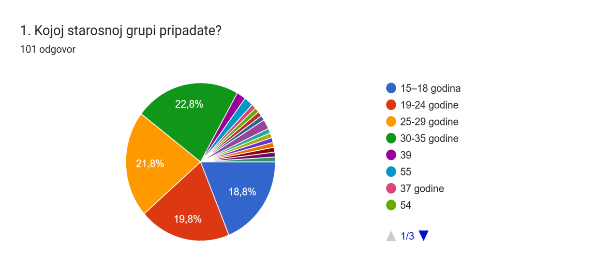
Na prvo pitanje odgovorila je 101 osoba. Najveći pojedinačni udio čini grupa od 30 do 35 godina sa 22,8%, zatim 25–29 godina sa 21,8%, 19–24 godine sa 19,8% i 15–18 godina sa 18,8%. Preostalih približno 16,8% čine pojedinačno unesene starosne vrijednosti u kategoriji „drugo“. Grafikon pokazuje da su četiri osnovne starosne grupe relativno ravnomjerno zastupljene, bez izrazite dominacije jedne kategorije. To je korisno jer stavovi u nastavku istraživanja obuhvataju iskustva adolescenata, studenata i mladih odraslih, kao i dijela starijih učesnika koji su se sami upisali. Istovremeno, veliki broj pojedinačnih unosa u kategoriji „drugo“ ukazuje da bi u budućem istraživanju trebalo preciznije definisati ciljnu starosnu granicu ili ponuditi šire unaprijed definisane kategorije.
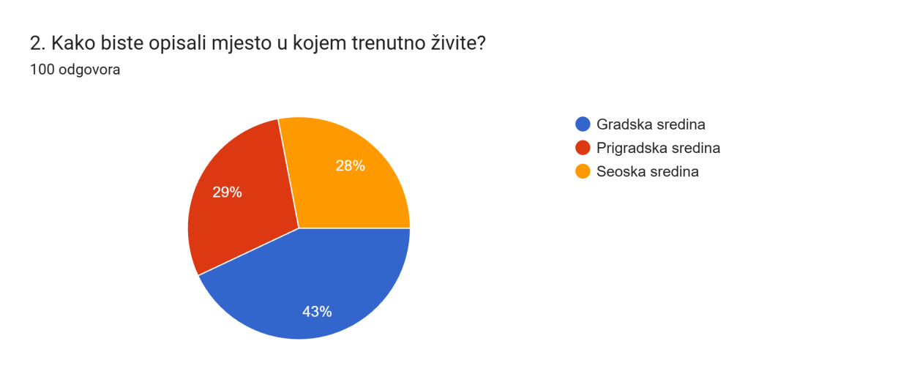
Na drugo pitanje odgovorilo je 100 ispitanika. Gradska sredina zastupljena je sa 43%, prigradska sa 29%, a seoska sa 28%. Dakle, nešto manje od polovine uzorka živi u gradu, dok 57% ispitanika dolazi iz prigradskih i seoskih sredina. Ovakva struktura je značajna za tumačenje pitanja o obrazovanju, zapošljavanju, kulturnim sadržajima i aktivizmu, jer dostupnost institucija, programa i radnih mjesta može zavisiti od mjesta stanovanja. Rezultati zato ne odražavaju isključivo iskustvo urbanih mladih, već uključuju i perspektive sredina u kojima su određene mogućnosti često prostorno udaljenije ili manje dostupne.
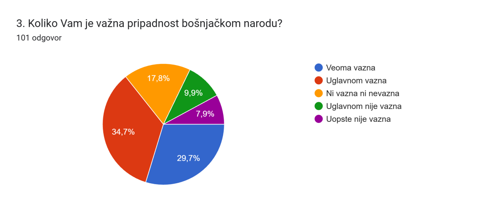
Na pitanje o značaju nacionalne pripadnosti odgovorila je 101 osoba. Za 29,7% ispitanika pripadnost bošnjačkom narodu je veoma važna, a za 34,7% uglavnom važna. Zbirno, 64,4% ispitanika izražava jasan pozitivan odnos prema nacionalnoj pripadnosti. Neutralan stav ima 17,8%, dok 9,9% navodi da pripadnost uglavnom nije važna, a 7,9% da uopšte nije važna. Grafikon pokazuje da identitet za većinu učesnika ima relevantno mjesto u ličnom i društvenom životu, ali i da uzorak nije homogen: približno trećina ispitanika zauzima neutralniji ili manje afirmativan stav. To govori o različitim načinima na koje mladi doživljavaju nacionalnu pripadnost u savremenom društvu.
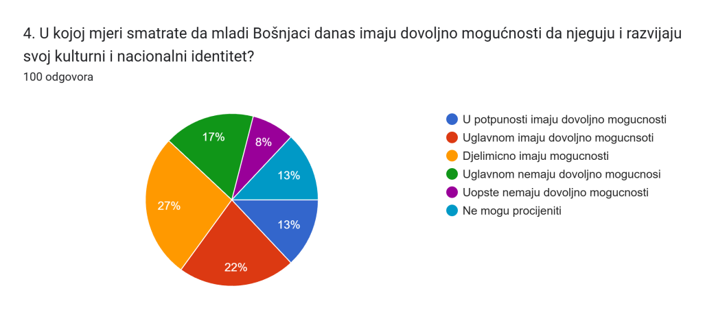
Na četvrto pitanje odgovorilo je 100 ispitanika. Da mladi u potpunosti imaju dovoljno mogućnosti smatra 13%, a da ih uglavnom imaju 22%. Najveća grupa, 27%, procjenjuje da mogućnosti postoje samo djelimično. Sa druge strane, 17% smatra da mladima uglavnom nedostaje dovoljno mogućnosti, a 8% da ih uopšte nema; 13% ne može procijeniti. Rezultat je podijeljeniji nego kod pitanja o važnosti identiteta. Iako 35% daje pozitivnu ocjenu, 25% daje negativnu, dok 40% ostaje u sredini ili bez jasne procjene. To ukazuje na prostor za unapređenje dostupnosti kulturnih programa, sadržaja na bosanskom jeziku, omladinskih inicijativa i drugih oblika kroz koje se identitet može aktivno njegovati.
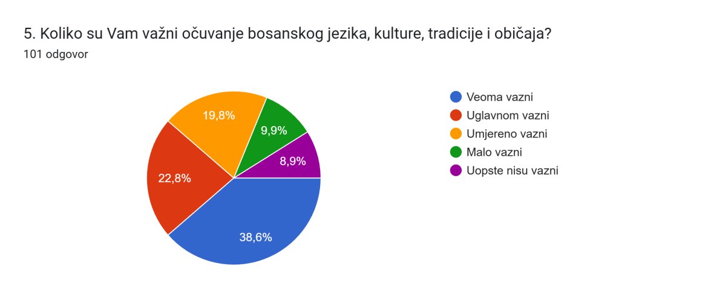
Na peto pitanje odgovorila je 101 osoba. Očuvanje jezika, kulture, tradicije i običaja veoma je važno za 38,6% ispitanika, a uglavnom važno za 22,8%. Umjereno važnim to smatra 19,8%, malo važnim 9,9%, a potpuno nevažnim 8,9%. Ukupno 61,4% ispitanika iskazuje visok stepen važnosti, što je u skladu sa nalazom da većina pridaje značaj bošnjačkoj pripadnosti. Ipak, oko petine bira srednju kategoriju, a gotovo petina nizak nivo važnosti. Rezultat sugeriše da tradicionalni elementi identiteta ostaju značajni većini ispitanika, ali da postoji i vidljiva pluralnost odnosa prema jeziku i kulturnom nasljeđu.
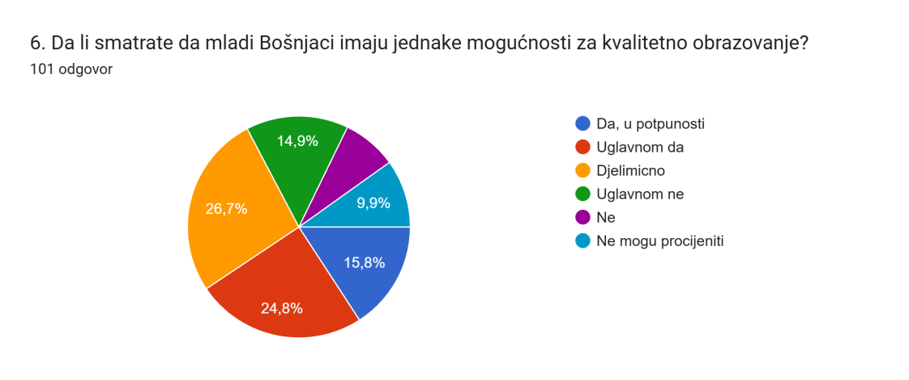
Na šesto pitanje odgovorila je 101 osoba. Da mladi Bošnjaci u potpunosti imaju jednake mogućnosti smatra 15,8%, a „uglavnom da“ 24,8%. Najveća pojedinačna grupa, 26,7%, bira odgovor „djelimično“. Negativniji stav iskazuje 14,9% kroz odgovor „uglavnom ne“, dok oko 7,9% smatra da jednakih mogućnosti nema; 9,9% ne može procijeniti. Pozitivne ocjene zbirno iznose 40,6%, ali više od četvrtine ispitanika vidi samo djelimičnu jednakost, a približno petina izražava negativan stav. Grafikon zato ne pokazuje opšti osjećaj potpune isključenosti, ali ukazuje da značajan dio učesnika prepoznaje ograničenja ili nejednakosti u pristupu kvalitetnom obrazovanju.
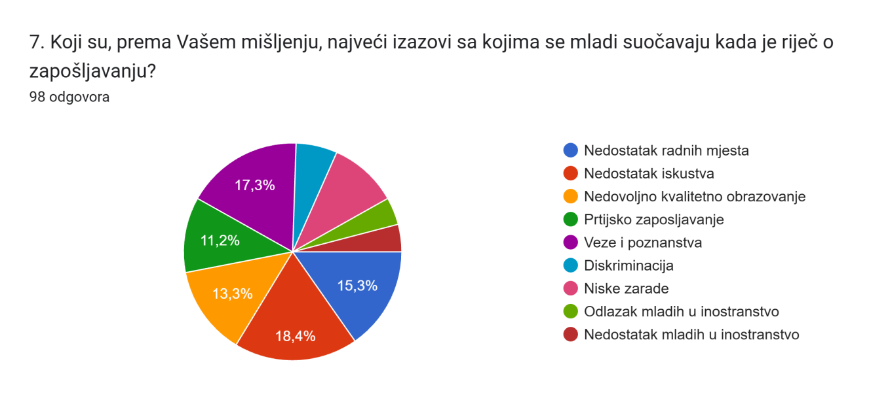
Na sedmo pitanje zabilježeno je 98 odgovora, uz mogućnost izbora više opcija. Među najzastupljenijim odgovorima na grafikonu izdvajaju se nedostatak iskustva (18,4%), veze i poznanstva (17,3%), nedostatak radnih mjesta (15,3%), nedovoljno kvalitetno obrazovanje (13,3%) i partijsko zapošljavanje (11,2%). Ostale opcije – diskriminacija, niske zarade, odlazak mladih u inostranstvo i nedostatak prilika za stručno usavršavanje – zastupljene su manjim, ali i dalje relevantnim udjelima. Struktura odgovora pokazuje da ispitanici problem zapošljavanja ne svode na jedan uzrok. Oni istovremeno prepoznaju manjak radnih mjesta i iskustva, ali i percepciju neformalnih mehanizama zapošljavanja, poput veza, poznanstava i partijskog uticaja. To upućuje na potrebu za transparentnijim zapošljavanjem, praksama, stručnim usavršavanjem i boljim povezivanjem obrazovanja sa tržištem rada.
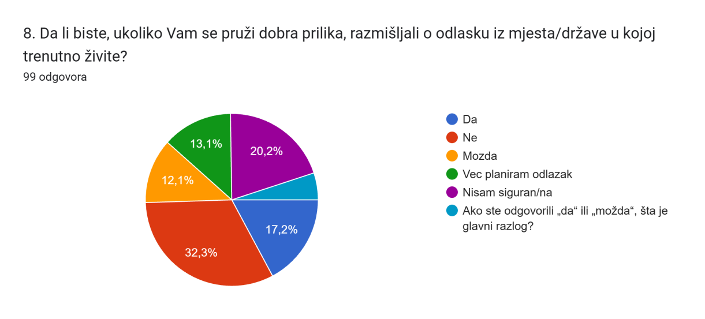
Na osmo pitanje odgovorilo je 99 ispitanika. Najveći udio, 32,3%, navodi da ne bi razmišljao o odlasku. Ipak, 17,2% odgovara „da“, 12,1% „možda“, 13,1% već planira odlazak, a 20,2% nije sigurno. U grafikonu se pojavljuje i dodatnih 5,1% pod tekstom potpitanja „Ako ste odgovorili ‘da’ ili ‘možda’, šta je glavni razlog?“, što je očigledno tehnička kategorija, a ne sadržinski odgovor. I bez te nepravilnosti, podaci pokazuju znatnu otvorenost prema mobilnosti: dio ispitanika već planira odlazak, dio ga razmatra, a petina nema formiran stav. To sugeriše da pitanje perspektive, zaposlenja i kvaliteta života može imati važnu ulogu u budućim životnim odlukama mladih.
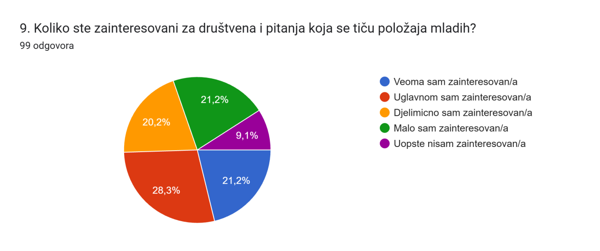
Na deveto pitanje odgovorilo je 99 ispitanika. Veoma zainteresovanih je 21,2%, a uglavnom zainteresovanih 28,3%, što zajedno čini 49,5% uzorka. Djelimično je zainteresovano 20,2%, malo zainteresovano 21,2%, dok 9,1% uopšte nije zainteresovano. Skoro polovina ispitanika, dakle, iskazuje relativno visok nivo interesovanja, a dodatna petina umjeren. Istovremeno, približno trećina pokazuje nizak ili nikakav interes. Ovakav rezultat ukazuje da postoji solidna osnova za omladinski angažman, ali da je potrebno pronaći sadržaje i modele uključivanja koji bi društvene teme učinili konkretnijim i bližim mladima koji trenutno ostaju pasivniji.
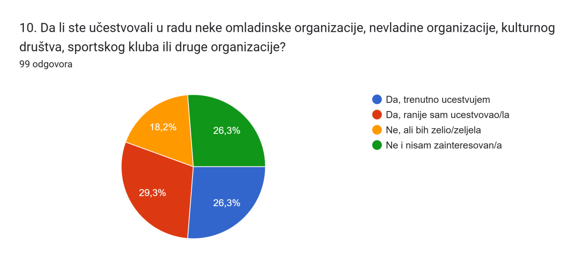
Na deseto pitanje odgovorilo je 99 ispitanika. Trenutno u nekoj organizaciji učestvuje 26,3%, a ranije je učestvovalo 29,3%. To znači da više od polovine ispitanika, ukupno 55,6%, ima makar neko iskustvo organizovanog društvenog angažmana. Dodatnih 18,2% trenutno ne učestvuje, ali bi željelo, dok 26,3% nije zainteresovano. Posebno je značajna grupa koja želi da se uključi, jer predstavlja neposredan potencijal za omladinske, kulturne, sportske i nevladine programe. Rezultat pokazuje da pasivnost nije nužno posljedica nezainteresovanosti; kod dijela mladih moguće je da nedostaju informacije, dostupne organizacije ili dovoljno privlačni programi.
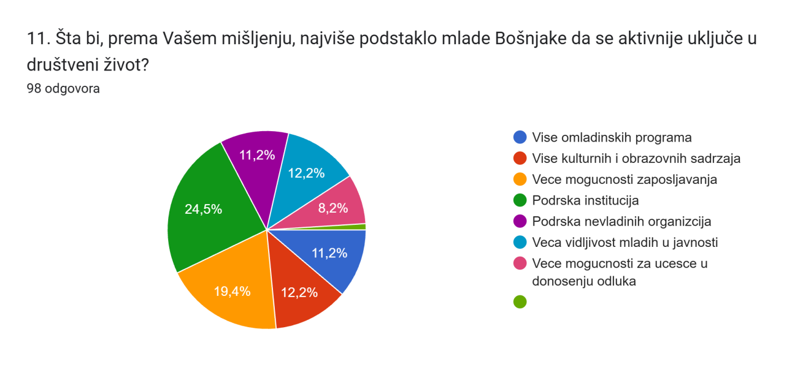
Na jedanaesto pitanje odgovorilo je 98 ispitanika. Najveći udio, 24,5%, smatra da bi veće mogućnosti zapošljavanja najviše podstakle aktivnije uključivanje mladih. Slijedi više omladinskih programa sa 19,4%. Ostali odgovori su prilično ravnomjerno raspoređeni: više kulturnih i obrazovnih sadržaja i veća vidljivost mladih u javnosti imaju po 12,2%, dok više omladinskih programa/ostale institucionalne i participativne opcije bilježe udjele oko 8–12%. Ovakva raspodjela pokazuje da aktivizam ispitanici povezuju i sa ekonomskom sigurnošću i sa konkretnom ponudom sadržaja. Drugim riječima, društveno uključivanje nije odvojeno od svakodnevnih životnih uslova: mladima su potrebne i prilike za rad i stvarni kanali kroz koje mogu učestvovati, biti vidljivi i uticati na odluke.
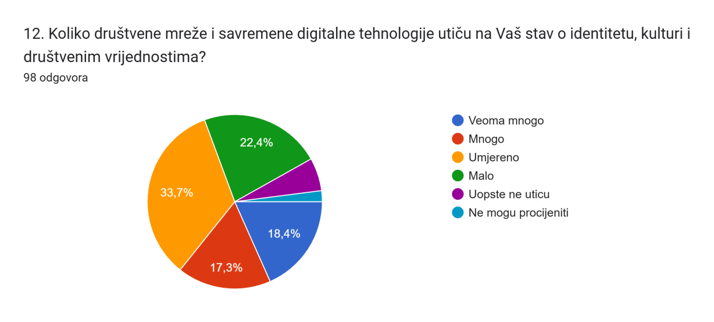
Na dvanaesto pitanje odgovorilo je 98 ispitanika. Najveća grupa, 33,7%, procjenjuje uticaj društvenih mreža i digitalnih tehnologija kao umjeren. Veoma veliki uticaj navodi 18,4%, a veliki 17,3%, što znači da 35,7% ispitanika prepoznaje snažan uticaj. Još 22,4% smatra da je uticaj mali, dok su kategorije „uopšte ne utiču“ i „ne mogu procijeniti“ zastupljene sa približno po 4%. Rezultati potvrđuju da digitalno okruženje ima primjetnu ulogu u oblikovanju stavova o identitetu, kulturi i društvenim vrijednostima, ali kod većine taj uticaj nije doživljen kao apsolutan. To otvara prostor da se digitalne platforme koriste planski za edukativne i kulturne sadržaje, uz razvoj kritičkog odnosa prema informacijama.
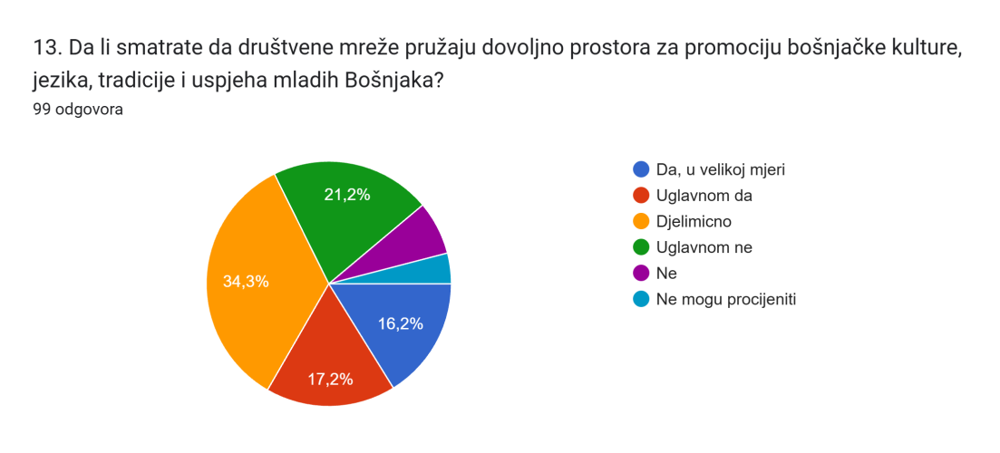
Na trinaesto pitanje odgovorilo je 99 ispitanika. Da društvene mreže pružaju dovoljno prostora za promociju bošnjačke kulture, jezika, tradicije i uspjeha mladih u velikoj mjeri smatra 16,2%, a „uglavnom da“ 17,2%. Najveća grupa, 34,3%, bira odgovor „djelimično“. Uglavnom negativan stav ima 21,2%, dok manji dio odgovara „ne“ ili ne može procijeniti. Dominacija srednje kategorije pokazuje da ispitanici vide potencijal digitalnih platformi, ali smatraju da on nije u potpunosti iskorišćen. U praktičnom smislu, rezultat podržava razvoj kvalitetnijih, redovnijih i mladima prilagođenih digitalnih sadržaja o jeziku, kulturi, tradiciji, savremenim uspjesima i pozitivnim primjerima iz zajednice.
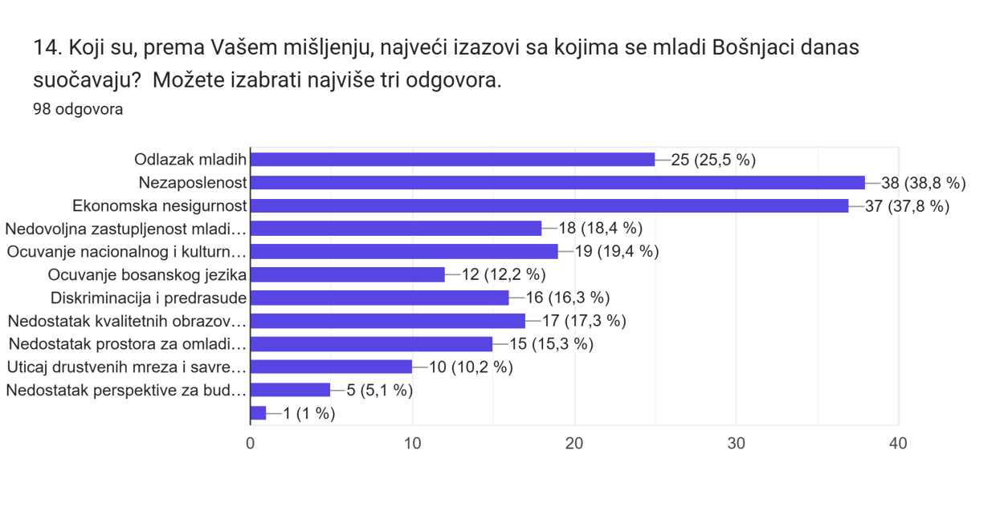
Na četrnaesto pitanje odgovorilo je 98 ispitanika, uz mogućnost izbora najviše tri odgovora. Najčešće su birani nezaposlenost – 38 odgovora (38,8%) i ekonomska nesigurnost – 37 (37,8%). Odlazak mladih izabralo je 25 ispitanika (25,5%). Zatim slijede očuvanje nacionalnog i kulturnog identiteta sa 19 izbora (19,4%), nedovoljna zastupljenost mladih u institucijama sa 18 (18,4%), nedostatak kvalitetnih obrazovnih i kulturnih sadržaja sa 17 (17,3%), diskriminacija i predrasude sa 16 (16,3%) i nedostatak prostora za omladinski aktivizam sa 15 (15,3%). Očuvanje bosanskog jezika izabralo je 12 ispitanika (12,2%), uticaj društvenih mreža i savremenih trendova 10 (10,2%), nedostatak perspektive za budućnost 5 (5,1%), a kategoriju „drugo“ 1 ispitanik (1%). Grafikon vrlo jasno pokazuje da su ekonomska pitanja u vrhu prioriteta, ali se uz njih pojavljuju institucionalna zastupljenost, identitet, obrazovno-kulturni sadržaji i aktivizam. Izazovi se, prema tome, prepliću: materijalna sigurnost je centralna, ali nije jedina dimenzija položaja mladih. Posljednje pitanje je otvorenog tipa i od ispitanika traži ličnu preporuku najvažnije mjere za poboljšanje položaja mladih Bošnjaka.
11.ZAKLJUČAK
Rezultati ankete pokazuju da mladi Bošnjaci obuhvaćeni istraživanjem istovremeno pridaju značaj identitetu i kulturnom nasljeđu, prepoznaju ekonomske i institucionalne prepreke i pokazuju određeni potencijal za društveni angažman. Najizraženiji problemi vezani su za nezaposlenost i ekonomsku nesigurnost, dok se u oblasti zapošljavanja dodatno naglašavaju iskustvo, dostupnost radnih mjesta i percepcija neformalnih ili partijskih mehanizama. U oblasti identiteta postoji visok nivo važnosti jezika, kulture i tradicije, ali su procjene dostupnih mogućnosti za njihovo njegovanje umjerenije. Digitalne tehnologije imaju značajan, najčešće umjeren uticaj i predstavljaju kanal koji se može bolje koristiti za promociju kulture i uspjeha mladih.
Na osnovu nalaza, sadržajno se izdvajaju sljedeći pravci djelovanja: razvoj programa stručne prakse i zapošljavanja mladih; jačanje transparentnosti i jednakih mogućnosti; veća dostupnost omladinskih, kulturnih i obrazovnih sadržaja i van većih gradskih centara; podrška programima očuvanja bosanskog jezika i kulturnog nasljeđa; veće uključivanje mladih u rad institucija i procese donošenja odluka; te plansko korišćenje digitalnih platformi za kvalitetne, savremene i mladima prilagođene sadržaje. Ove pravce treba posmatrati kao teme koje proizlaze iz odgovora ispitanika, a ne kao dokaz da jedna mjera sama može riješiti sve identifikovane probleme. Za naredni ciklus istraživanja preporučljivo je standardizovati starosne kategorije, odvojiti otvorena potpitanja od zatvorenih opcija u grafikonu, dosljedno prikazati broj odgovora za svako pitanje i posebno obraditi otvorene odgovore iz pitanja 15. Time bi se dobila preciznija baza za poređenje rezultata, izradu preporuka i praćenje promjena u stavovima mladih kroz vrijeme.
Autor analize: Kalač M Nihad